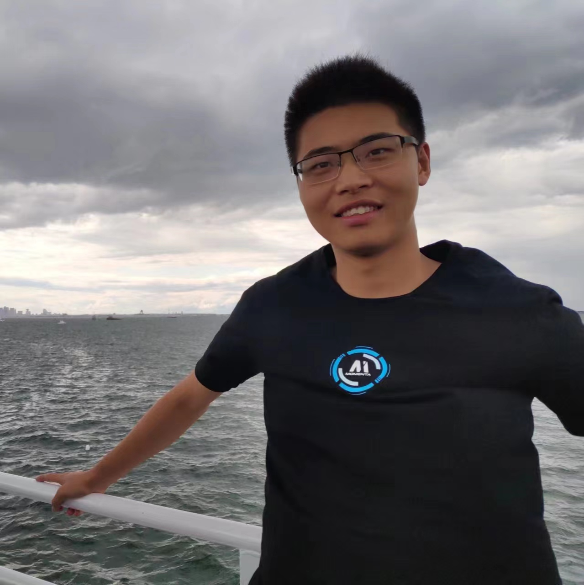

Huayu Chen (陈华玉)PhD student
Room 1-509, FIT Building |
 |
Biography
I am a fifth-year PhD Candidate of TSAIL Group in the Department of Computer Science and Technology, Tsinghua University, advised by Prof. Jun Zhu and Prof. Hang Su. Currently, I am also a research intern at Nvidia Deep Imagination Research group in the San Francisco Bay Area, working with Dr. Ming-yu Liu. Previously, I received my B.S. degree from the Department of Automation of Tsinghua University in July 2021. I spent a wonderful time at the Digital Media Lab at Tsinghua University, advised by Prof. Yebin Liu in the field of AIGC from Oct 2018 to May 2019.
My research interests lie primarily in the area of deep reinforcement learning and deep generative models.
My lifelong goal is to build a scalable, impenetrable, and adaptable decision-making engine that could relieve human from tedious tasks.
My progresses include authoring Tianshou: A highly modularized deep reinforcement learning library 
Looking for research positions. My CV is [here]. Drop me an email if you feel interested.
Selected Publications
RL Infra:-
Tianshou: A Highly Modularized Deep Reinforcement Learning Library
Jiayi Weng*, Huayu Chen*, Dong Yan, Kaichao You, Alexis Duburcq, Minghao Zhang, Yi Su, Hang Su, Jun Zhu
Journal of Machine Learning Research (JMLR)
[Code: 9.9k Stars]
-
DiffusionNFT: Online Diffusion Reinforcement with Forward Process
Kaiwen Zheng*, Huayu Chen*, Haotian Ye, Haoxiang Wang, Qinsheng Zhang, Kai Jiang, Hang Su, Stefano Ermon, Jun Zhu, Ming-Yu Liu
International Conference on Learning Representations (ICLR 2026)
[Project Page] [Preprint] [Code] -
Visual Generation Without Guidance
Huayu Chen*, Kai Jiang*, Kaiwen Zheng, Jianfei Chen, Hang Su, Jun Zhu
International Conference on Machine Learning (ICML 2025)
[code] -
Toward Guidance-Free AR Visual Generation via Condition Contrastive Alignment
Huayu Chen, Hang Su, Peize Sun, Jun Zhu
International Conference on Learning Representations (ICLR 2025)
Oral (Accept rate~1.8%)
[code] -
Contrastive Energy Prediction for Exact Energy-Guided Diffusion Sampling in Offline Reinforcement Learning
Cheng Lu*, Huayu Chen*, Jianfei Chen, Hang Su, Chongxuan Li, Jun Zhu
International Conference on Machine Learning (ICML 2023)
[code] [poster]
-
NFT: Bridging Supervised Learning and Reinforcement Learning in Math Reasoning
Huayu Chen, Kaiwen Zheng, Qinsheng Zhang, Ganqu Cui, Yin Cui, Haotian Ye, Tsung-Yi Lin, Ming-Yu Liu, Jun Zhu, Haoxiang Wang
International Conference on Learning Representations (ICLR 2026)
[Project Page] [Preprint] -
Cosmos-Reason1: From Physical Common Sense To Embodied Reasoning
Nvidia Group (Core contributor, for VLM RL training)
[project page] [code] -
Noise Contrastive Alignment of Language Models with Explicit Rewards
Huayu Chen, Guande He, Lifan Yuan, Ganqu Cui, Hang Su, Jun Zhu
Annual Conference on Neural Information Processing Systems (NeurIPS 2024)
[code] -
Free Process Rewards without Process Labels
Lifan Yuan, Wendi Li, Huayu Chen, Ganqu Cui, Ning Ding, Kaiyan Zhang, Bowen Zhou, Zhiyuan Liu, Hao Peng
(Propose the ImplicitPRM algorithm employed by PRIME [1.8k Stars])
International Conference on Machine Learning (ICML 2025)
[code]
-
RDT-1B: a Diffusion Foundation Model for Bimanual Manipulation
Songming Liu, Lingxuan Wu, Bangguo Li, Hengkai Tan, Huayu Chen, Zhengyi Wang, Ke Xu, Hang Su, Jun Zhu
International Conference on Learning Representations (ICLR 2025)
[project page] [code] -
Aligning Diffusion Behaviors with Q-functions for Efficient Continuous Control
Huayu Chen, Kaiwen Zheng, Hang Su, Jun Zhu
Annual Conference on Neural Information Processing Systems (NeurIPS 2024)
-
Score Regularized Policy Optimization through Diffusion Behavior
Huayu Chen, Cheng Lu, Zhengyi Wang, Hang Su, Jun Zhu
International Conference on Learning Representations (ICLR 2024)
[code] [poster] -
Offline Reinforcement Learning via High-Fidelity Generative Behavior Modeling
Huayu Chen, Cheng Lu, Chengyang Ying, Hang Su, Jun Zhu
International Conference on Learning Representations (ICLR 2023)
[code] [poster]
Competitions
-
First place (two years in a row) in Tencent's multi-agent RL competition of Honor of Kings (王者荣耀), final win rate: 99.2% , 2021-2023
[news] [webpage] - Second place in DJI's Robomaster Sim2Real Challenge, ICRA 2022
- First place in the 30th International Design Contest (IDC Robocon 2019, MIT), 2019
- First place in the 20th Electronic Design Competition at Tsinghua University, 2018
- First place in the 1st Artificial Intelligence Challenge at Tsinghua University, 2017
Honors & Awards
- Bytedance Scholarship, 2025
- China National Scholarship, 2025
- HUAWEI-Tsinghua Scholarship, 2023
- '84' Future Innovation Scholarship, 2023
- Outstanding Undergraduate in Beijing, 2021
- BaoGang Scholarship (Awarded to ~500 students in China every year), 2021
- Student Of The Year, in Dept. of Automation, Tsinghua University, 2020
- China National Scholarship, 2019
- Excellence Award for Technological Innovation, Tsinghua University, 2019
- '129' Scholarship (Highest honor for 2nd year students at Tsinghua), 2018
- 1st Prize in the 35th China Regional College Students Physics Competition, 2018
- 1st Prize in the 30th National Physics Olympiad, 2016